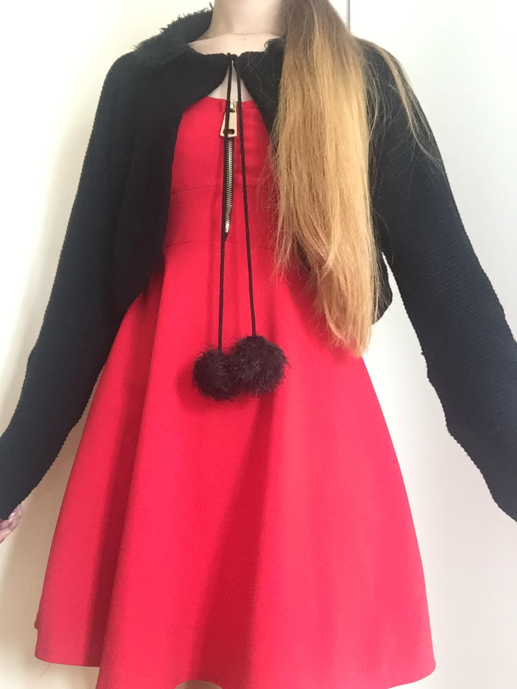
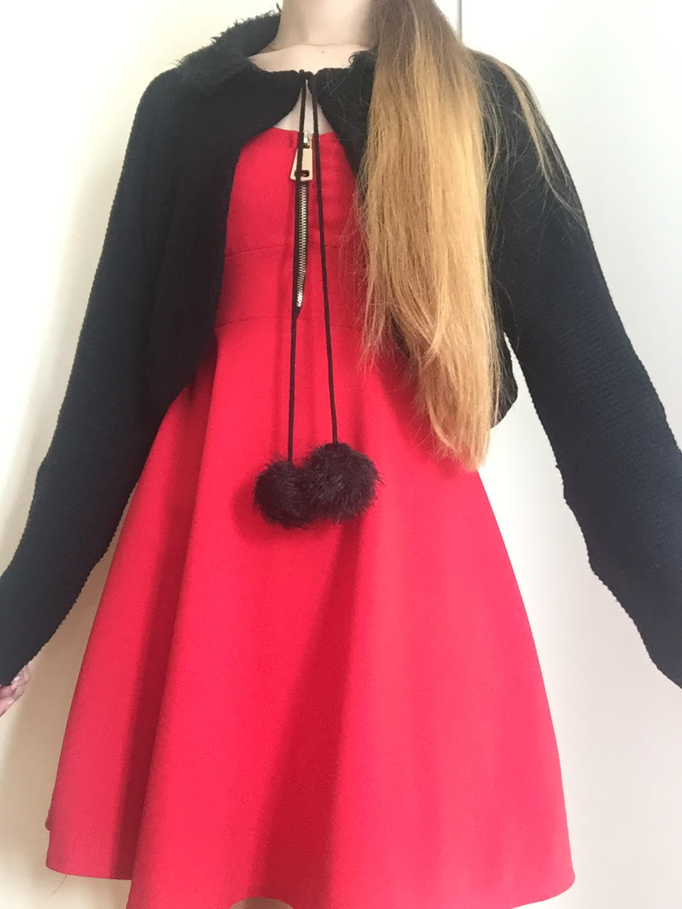

Welcome to LittleSew
Here you will find information about which fabrics to use on which projects. Also will we inform you of handy tips and tricks you can use while sewing your own clothes.
Some of the projects I recently finished are 2 dresses, a skirt and a cardigan. Some tips I can give you about that are:
- If you use a stretchy fabric for a cardigan, you need to watch out that you don't stretch it too much while sewing everything together.
- Make sure that if you want to interline your piece that you make the interlining slightly longer that the piece. If you don't do that you might run short on fabric. Better to cut the extra fabric off when not needed, that needing to cut an other piece.
- Make sure that when you make your pattern that you name the separate pieces with what it is and wherefrom it is.

 
